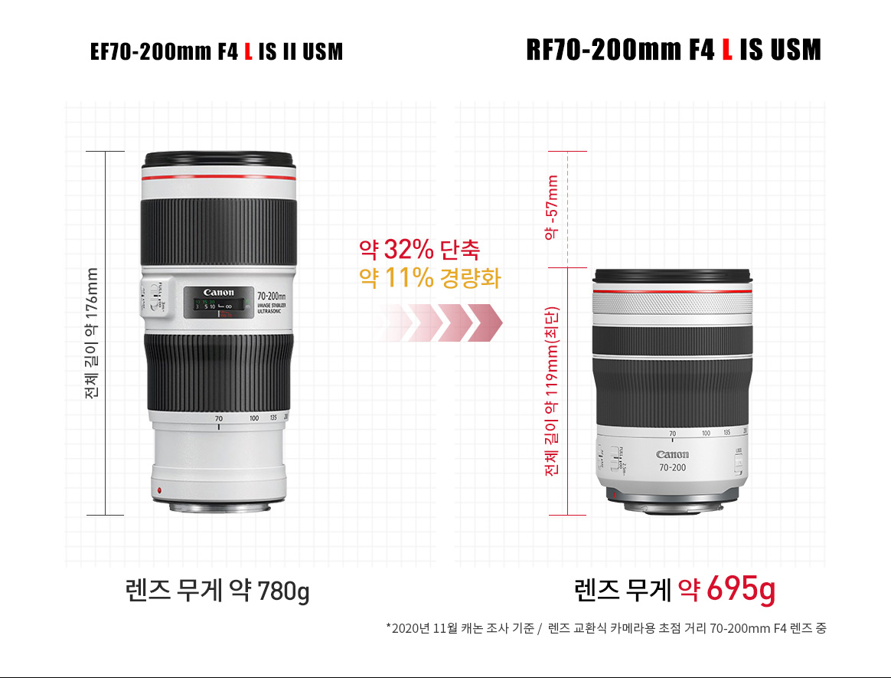
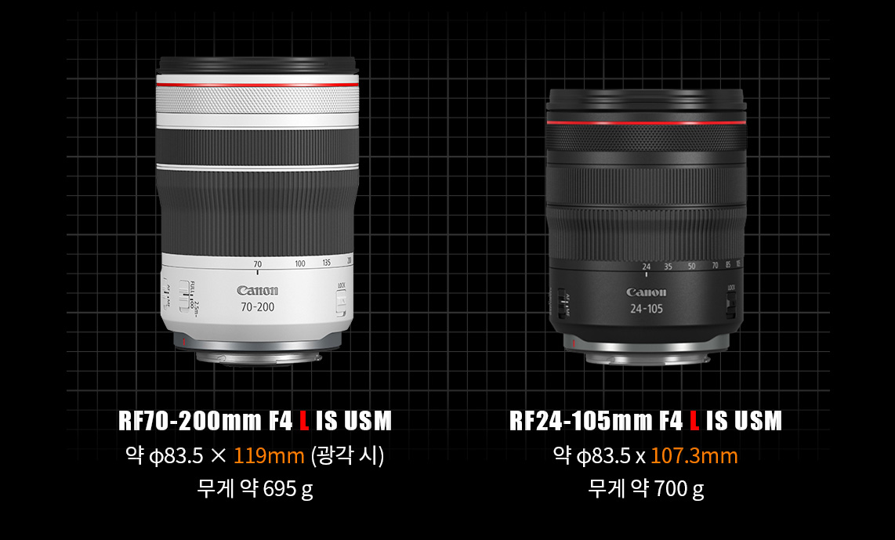
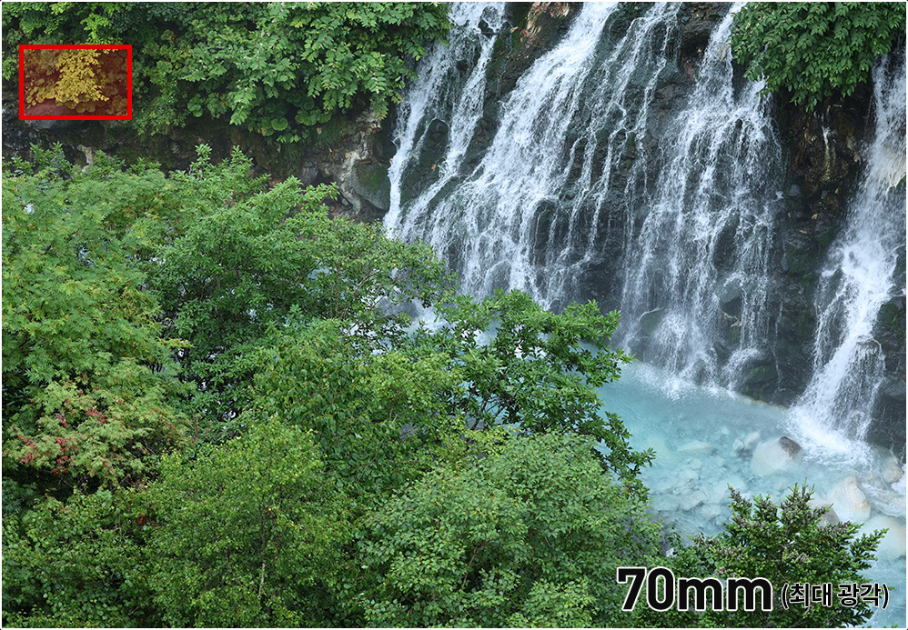
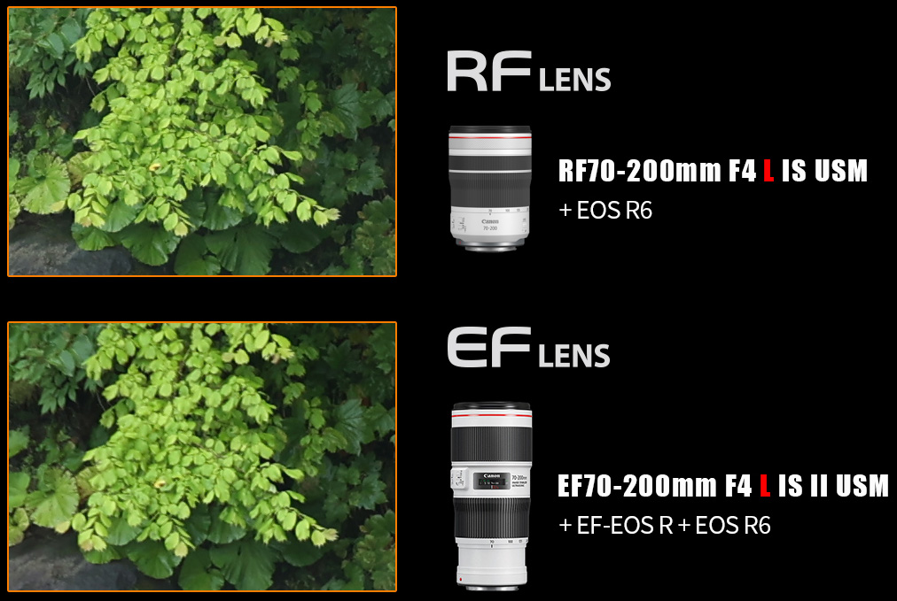
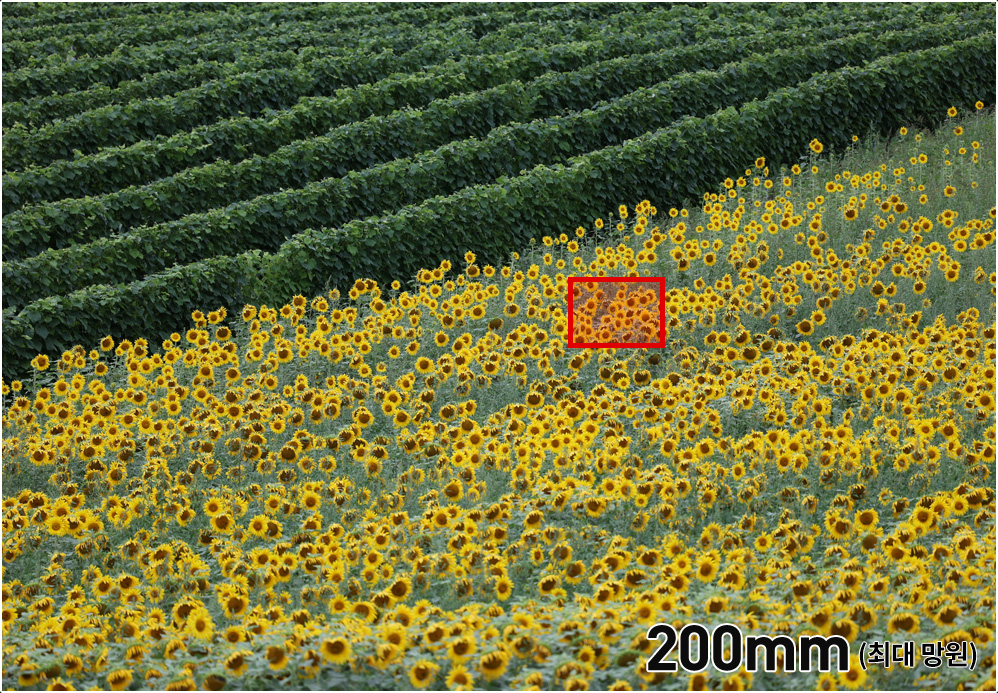
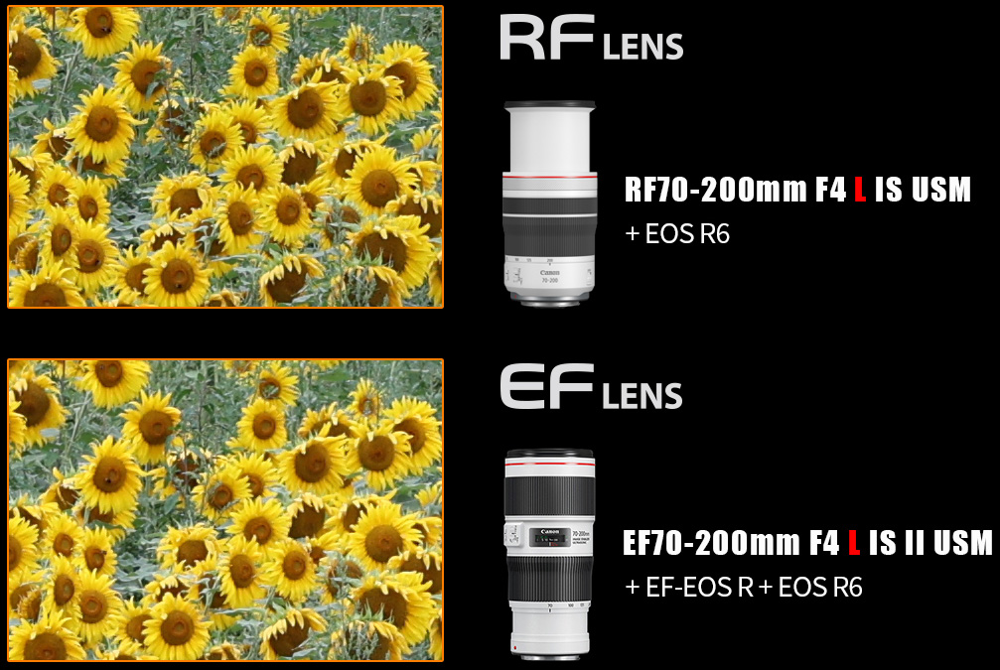
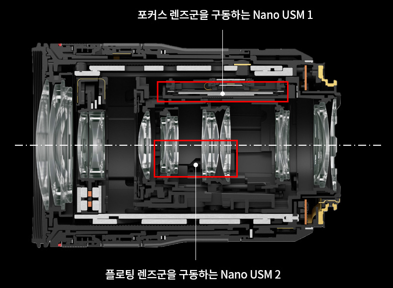
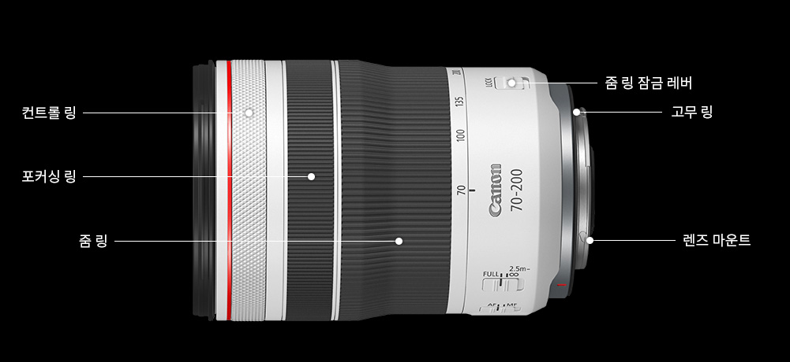
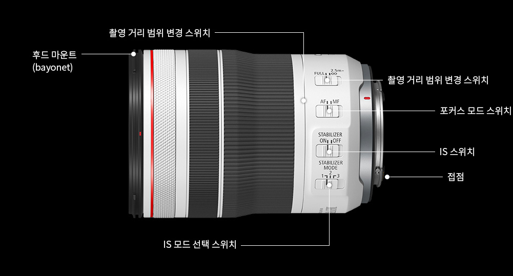

크기는 아담한
화질은 대단한
활용은 무한한
세계에서 가장 작고 가벼운*
70-200mm 렌즈
대구경 마운트와 짧은 백포커스가 특징인 EOD R 시스템.
같은 초점거리와 조리개 값을 가진 EF70-200mm F4 L IS USM 보다
고화질을 유지하면서도 렌즈 길이와 무게를 크게 줄였습니다.


신조어의 탄생
표준 줌 렌즈 크기의 '스냅 망원 줌렌즈'
겉으로 보고 들어만 봐서는 망원 줌 렌즈인지 모를 정도의 크기와 무게.
표준 줌 렌즈와의 크기 비교

카메라에 마운트하고도 가방에 넣어 다닐 수 있는 망원 줌 렌즈

당겨도 풀어도 변하지 않는 것은
이미지 퀄리티 뿐
고화질을 구현하기 쉬운 EOS R 시스템의 장점과 UD 렌즈 4매를 사용한 렌즈 설계의 집약체.
전체 줌 영역에서 효과적으로 색수차를 보정합니다.




캐논의 나노 USM,
뛰어난 AF 퍼포먼스의 숨은 공신
빠르고 조용하면서 제어 성능도 좋은 나노 USM을 탑재해 AF 퍼포먼스를 끌어 올렸습니다.
두 개의 독립적인 나노 USM으로 포커싱과 플로팅 컨트롤을 하는 최신 시스템을 통해,
초점거리와 피사체를 가리지 않고 빠르고 매끄러운 AF가 가능합니다.

Specification

